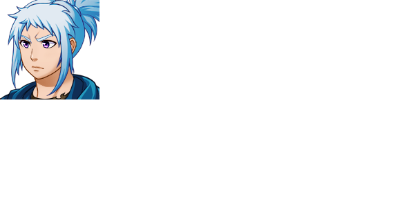

| Urrun | |
 | |
| Attributes | |
| Name Meaning: | far |
| Unique Ability: | Unknown |
| Location: | West Ward |
| Role: | Optional Boss (Chapter 7) |
| Affiliation: | Slums Faction |
| First Appearance: | Chapter Seven |
| Typing Style: | Normal |
| Music Theme(s): | "Fight in the Back Alley" |
| Details | |
| Species: | Game Character (Humanoid) |
| Gender: | Non-Binary |
| Eye Color: | Purple |
| Hair Color: | Light Blue |
| Status: | Alive |
Urrun is caustic, but they permit the party to pass after they prove themselves.
Urrun, along with Zilarra, wants to escape the West Ward, but is prevented from doing so by Haizea.
The full extent of Urrun's abilities are unknown. They can debuff the party with marijuana smoke.
Urrun is friends with Zilarra, and they both want to escape the West Ward.
| This page is in the folowing categories: Non-Binary Characters, Game Characters, Humanoid |